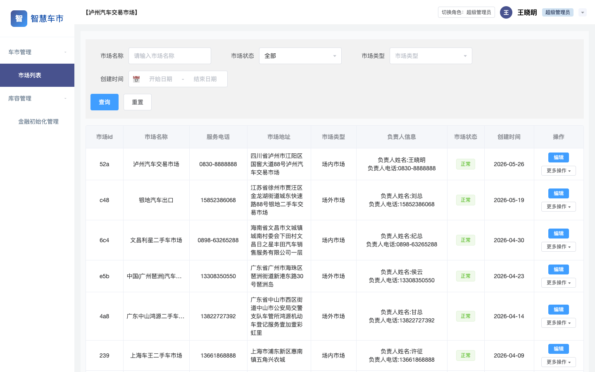
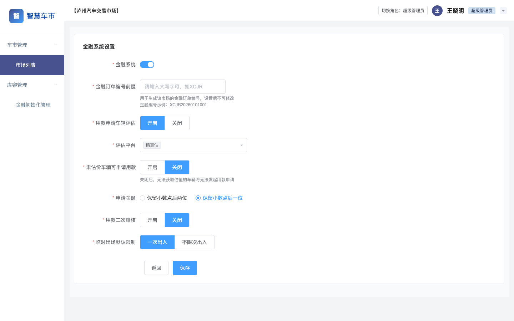
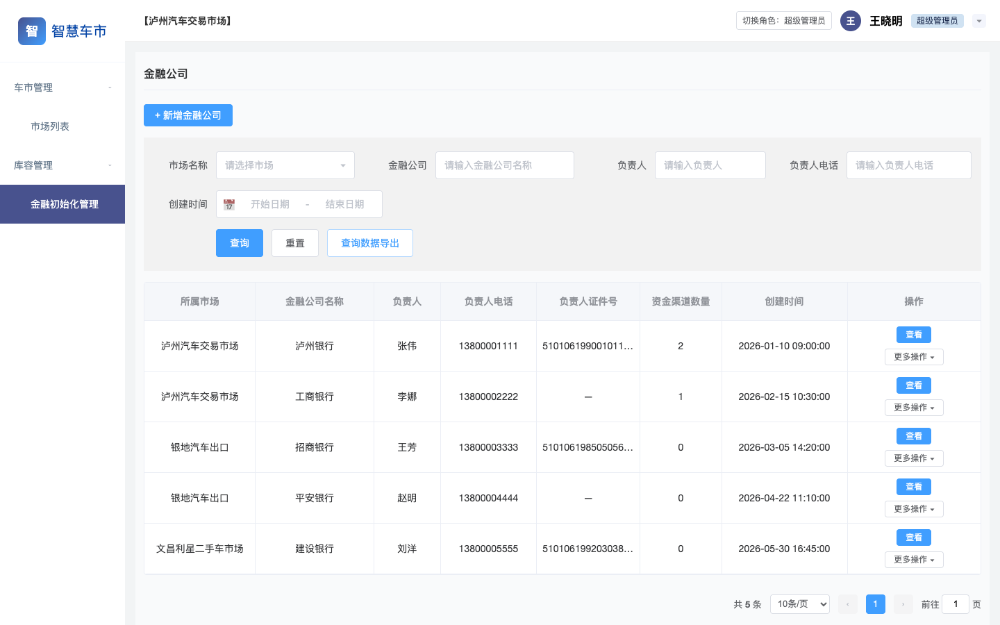
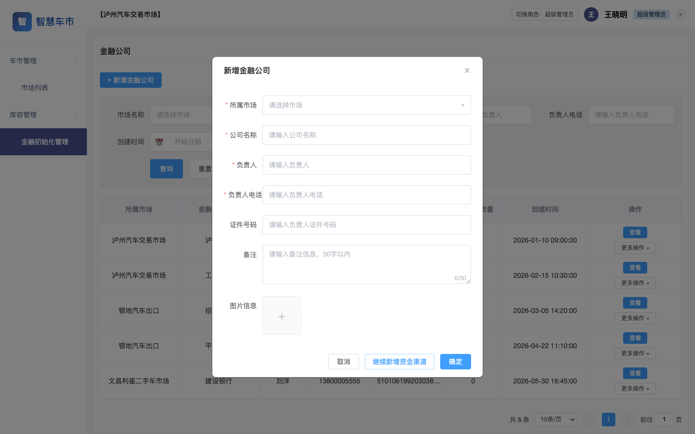
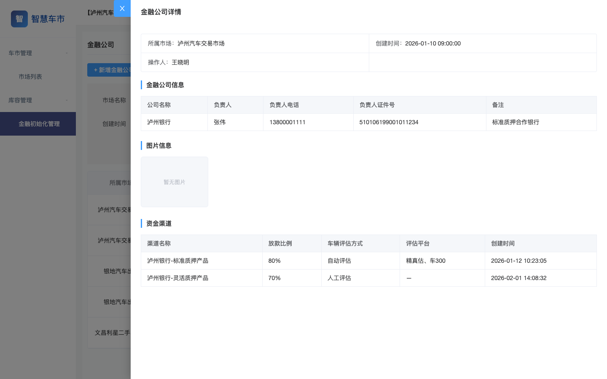
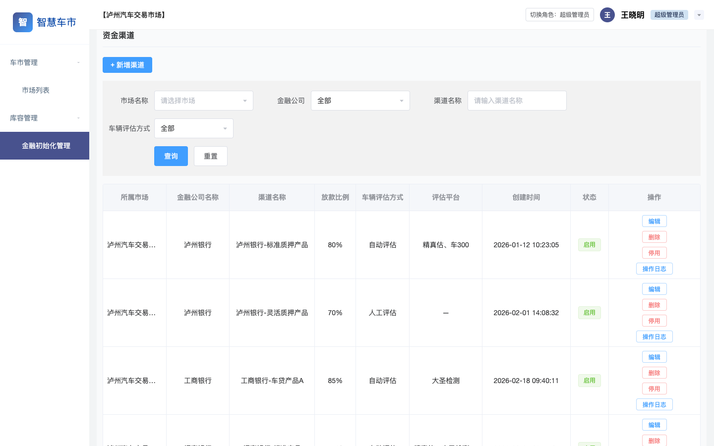
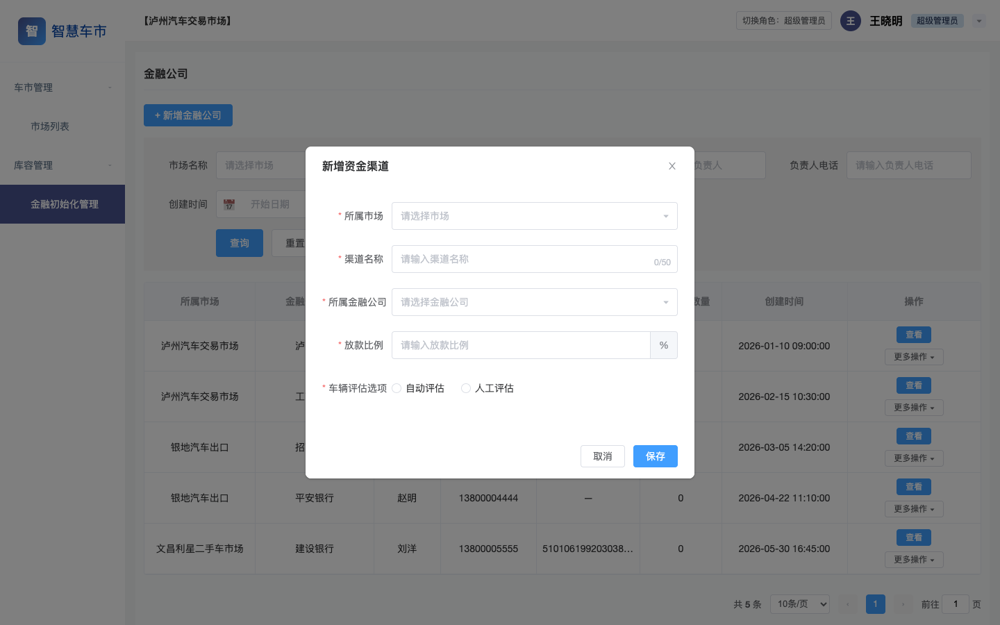
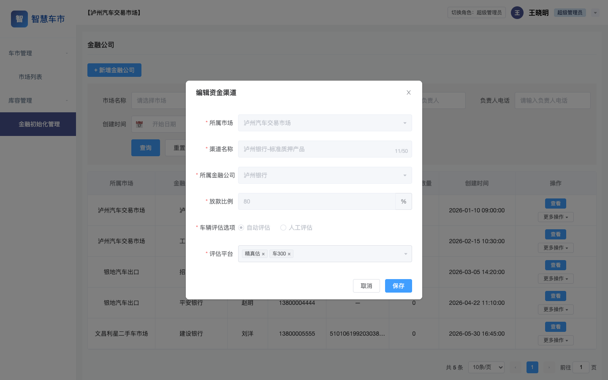
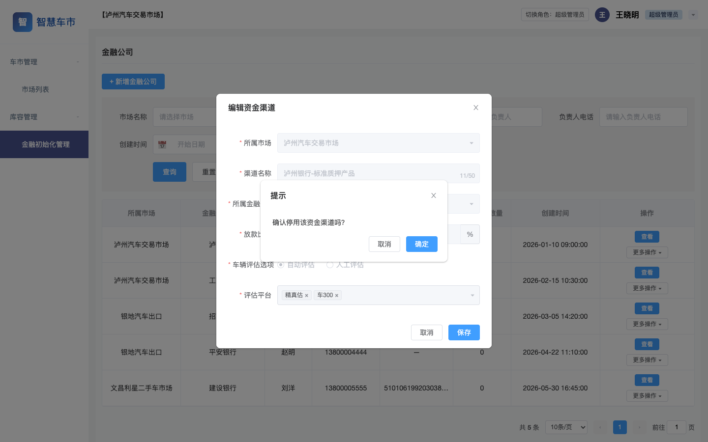
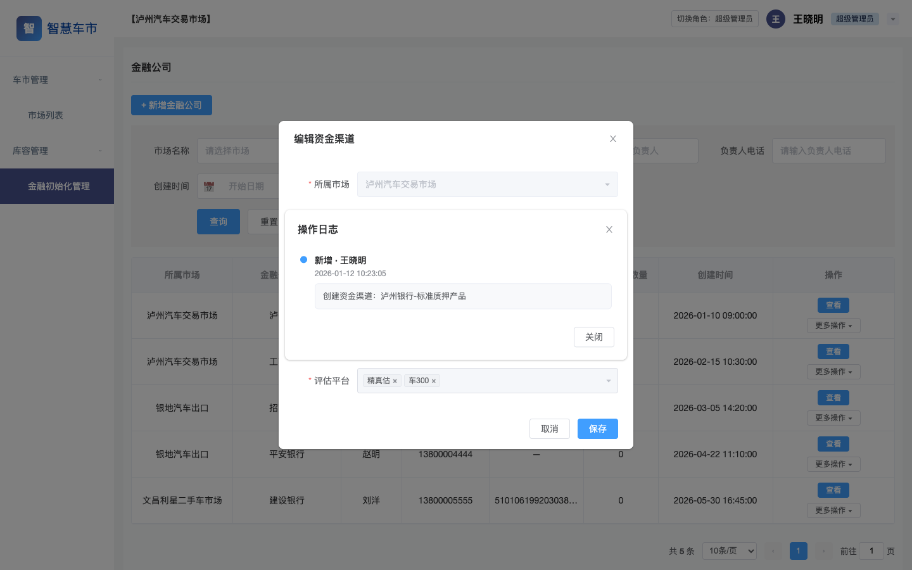

了解金融初始化功能的组成结构与使用场景
「金融初始化」是为二手车市场开通金融服务前必须完成的基础配置环节，主要包含两个模块：
| 模块 | 功能说明 | 管理入口 |
|---|---|---|
| 市场配置 | 为特定市场开启金融系统，配置订单编号前缀、车辆评估要求、未估价车辆申请限制等参数 | 左侧导航 → 车市管理 → 市场列表 → 配置 |
| 金融公司管理 | 录入为该市场提供融资服务的金融机构信息（如银行、金融公司） | 左侧导航 → 金融初始化管理 |
| 资金渠道管理 | 在每家金融公司下配置具体的贷款产品（渠道），包含放款比例、评估方式等 | 金融初始化管理页面下方 |
在市场列表中为目标市场开启并配置金融功能


| 配置项 | 说明 | 注意事项 |
|---|---|---|
| 金融系统（必填） | 总开关：开启后该市场可使用金融用款申请功能 | 关闭后所有金融功能对该市场不可用 |
| 金融订单编号前缀（必填） | 该市场金融订单的唯一前缀，如「XCJR」，系统自动拼接后续数字 | ⚠️ 一旦保存后不可修改，请谨慎填写（仅限大写字母） |
| 用款申请车辆评估（必填） | 控制商户用款申请时是否使用评估平台估价 | 选「开启」时需同步选择评估平台 |
| 评估平台（条件必填） | 当车辆评估开启时，选择对接的第三方评估平台 | 评估关闭时本项隐藏 |
| 未估价车辆可申请用款（必填） | 控制无估价的车辆是否允许发起用款申请 | 详见下方专项说明 |
| 申请金额（必填） | 设置金融申请金额的小数精度（保留一位或两位小数） | — |
| 用款二次审核（必填） | 开启后，审批通过的用款申请需进行二次人工确认 | — |
| 临时出场默认限制（必填） | 质押车辆临时出场时的出入次数限制默认值 | — |
此开关用于控制无法获取估值的车辆是否可以发起用款申请，默认值为关闭。
| 状态 | 效果说明 |
|---|---|
| 开启 | 未经估价的车辆也可以发起用款申请，由人工判断放款是否合规 |
| 关闭（默认） | 无法获取估值的车辆将被系统拦截，不允许发起用款申请 |
录入和维护为车市提供融资服务的金融机构信息
点击左侧导航 「金融初始化管理」，进入金融公司列表页。页面上方为筛选区，支持按市场名称、金融公司名称、负责人、负责人电话、创建时间等多维度查询。

| 列名 | 说明 |
|---|---|
| 所属市场 | 该金融公司关联的二手车市场 |
| 金融公司名称 | 金融机构的正式名称 |
| 负责人 / 负责人电话 | 对接的业务负责人及联系方式 |
| 负责人证件号 | 负责人身份证号码（选填） |
| 资金渠道数量 | 该公司下已配置的资金渠道总数 |
| 创建时间 | 录入系统的时间 |
| 操作 | 「查看」详情 / 「更多操作」下拉（编辑、删除） |

| 字段 | 是否必填 | 说明 |
|---|---|---|
| 所属市场 | 必填 | 从已配置金融系统的市场中选择 |
| 公司名称 | 必填 | 金融机构的正式全称 |
| 负责人 | 必填 | 业务对接人姓名 |
| 负责人电话 | 必填 | 11位手机号码 |
| 证件号码 | 选填 | 负责人身份证号 |
| 备注 | 选填 | 最多 50 字 |
| 图片信息 | 选填 | 上传相关证明材料图片 |
点击列表行右侧的 「查看」 按钮，右侧弹出详情抽屉，展示该公司的完整信息及其下所有资金渠道的只读列表。

在金融公司下配置具体的贷款产品（渠道），包含放款比例、评估方式等参数
在「金融初始化管理」页面向下滚动，可见 「资金渠道」 列表区域。上方筛选栏支持按市场、金融公司、渠道名称、评估方式组合查询。

| 列名 | 说明 |
|---|---|
| 所属市场 | 渠道关联的市场 |
| 金融公司名称 | 渠道所属的金融机构 |
| 渠道名称 | 贷款产品的名称，如「泸州银行-标准质押产品」 |
| 放款比例 | 贷款金额占车辆评估价值的百分比上限 |
| 车辆评估方式 | 自动评估（接入平台）或人工评估 |
| 评估平台 | 自动评估时对接的第三方平台名称 |
| 创建时间 | 渠道录入时间 |
| 状态 | 启用 或 停用，新建默认启用 |
| 操作 | 编辑 / 删除 / 停用（或启用）/ 操作日志 |

编辑操作与渠道的启用/停用状态直接关联，规则如下：
| 渠道状态 | 可编辑字段 | 说明 |
|---|---|---|
| 启用中 | 无（所有字段均不可修改） | 渠道启用期间所有参数全部锁定，防止影响进行中的业务 |
| 已停用 | 放款比例、车辆评估选项、评估平台 | 其余字段（所属市场、渠道名称、所属金融公司）不可修改 |

停用操作：

启用操作：
每条资金渠道都记录了完整的操作历史，点击操作列 「操作日志」 按钮查看。

| 日志类型 | 触发时机 |
|---|---|
| 新建 | 首次创建渠道时 |
| 编辑 | 修改渠道任意字段后保存 |
| 启用 | 将渠道从停用状态切换为启用 |
| 停用 | 将渠道从启用状态切换为停用 |
| 删除 | 执行删除操作时 |
开通一个市场金融服务的完整操作路径
| 问题 | 原因 | 解决方法 |
|---|---|---|
| 编辑渠道时放款比例是灰色无法修改 | 该渠道处于「启用」状态，核心参数被锁定 | 先点击「停用」，再重新进入编辑 |
| 新增渠道时找不到想要的金融公司 | 对应金融公司尚未录入，或未关联该市场 | 先在金融公司列表新增该公司（关联正确市场） |
| 车商反馈无法选择某渠道申请用款 | 渠道可能处于「停用」状态 | 查看渠道状态列，如为「停用」则点击「启用」恢复 |
| 未估价车辆无法提交用款申请 | 市场配置中「未估价车辆可申请用款」设置为关闭 | 确认是否需要开启该开关，与市场管理方确认后更改配置 |
| 金融订单编号前缀需要更改 | 前缀一旦保存后系统锁定，不允许修改 | 该字段设计上不支持更改，请在初次配置时谨慎填写 |